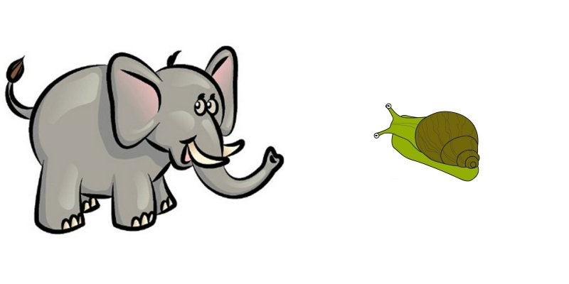

<!doctype html><html><head><title>Stroop</title>         <script src='js/jquery.js'></script>         <script src='js/jspsych/jspsych.js'></script>         <script src='js/jspsych/plugins/jspsych-single-stim.js'></script>         <script src='js/jspsych/plugins/jspsych-categorize.js'></script>         <script src='js/jspsych/plugins/jspsych-text.js'></script>         <script src='js/jspsych/plugins/jspsych-instructions.js'></script>         <script>var pagesArray = [];
var stim1 = { image: 'assets/bigbig.jpg',data: { Size: 'BiggerRight', Congruent: 'No' } };
var stim2 = { image: 'assets/bigsmall.jpg',data: { Size: 'BiggerLeft', Congruent: 'Yes' } };
var stim3 = { image: 'assets/Bsmallsmall.jpg',data: { Size: 'BiggerLeft', Congruent: 'No' } };
var stim4 = { image: 'assets/smallbig.jpg',data: { Size: 'BiggerRight', Congruent: 'Yes' } };
var stim5 = { image: 'assets/smallBsmall.jpg',data: { Size: 'BiggerRight', Congruent: 'No' } };
var stimExampleImages = ['<audio id="audioExample" hidden autoplay><source src="assets/example.wav"></audio>'];
var stimPracticeImages = [stim4.image, stim2.image, stim1.image, stim5.image, stim3.image, stim2.image];
var stimTrialsImages = [stim5.image, stim2.image, stim4.image, stim1.image, stim3.image, stim2.image, stim4.image, stim3.image, stim1.image, stim5.image, stim2.image, stim4.image];
var stimExampleData = [stim2.data];
var stimPracticeData = [stim4.data, stim2.data, stim1.data, stim5.data, stim3.data, stim2.data];
var stimTrialsData = [stim5.data, stim2.data, stim4.data, stim1.data, stim3.data, stim2.data, stim4.data, stim3.data, stim1.data, stim5.data, stim2.data, stim4.data];
var answersExample = [90];
var answersPractice = [77, 90, 77, 77, 90, 90];
var answersTrials = [77, 90, 77, 77, 90, 90, 77, 90, 77, 77, 90, 77];
var Introduction_introduction_block = { type: 'text', text: '<audio hidden autoplay><source src="assets/intro-stroop-15750.wav"></audio><p>Press any key to continue...' };
var Example_introduction_block = { type: 'text', text: 'No audio. Press any key to continue to examples...' };
var Example_test_block = {type: 'categorize',stimuli: stimExampleImages,key_answer: answersExample,text_answer: '',data: stimExampleData,choices: [90, 77],correct_text: '<script>document.getElementById("audioExample").pause();</scr' + 'ipt><audio hidden autoplay><source src="assets/well-done.wav"></audio>', incorrect_text: '<script>document.getElementById("audioExample").pause();</scr' + 'ipt><audio hidden autoplay><source src="assets/wrong-button.wav"></audio>',timing_feedback_duration: 2500,is_html: true };
var Practice_introduction_block = { type: 'text', text: '<audio hidden autoplay><source src="assets/practise-animals-13500.wav"></audio><p>Press any key to continue...' };
var Practice_test_block = {type: 'categorize',stimuli: stimPracticeImages,key_answer: answersPractice,text_answer: '',data: stimPracticeData,choices: [90, 77],correct_text: '<audio hidden autoplay><source src="assets/well-done.wav"></audio>', incorrect_text: '<audio hidden autoplay><source src="assets/wrong-button.wav"></audio>',timeout_message: '<audio hidden autoplay><source src="assets/too-slow.wav"></audio>',is_html: false,timing_feedback_duration: 2500,timing_response: 1250,timing_stim: 1250 };
var Trials_introduction_block = { type: 'text', text: '<audio hidden autoplay><source src="assets/start-properly-8750.wav"></audio><p>Press any key to continue...' };
var Trials_test_block = {type: 'single-stim',stimuli: stimTrialsImages,data: stimTrialsData,choices: [90, 77],is_html: false,timing_response: 1250,timing_stim: 1250 };
var Submit_introduction_block = { type: 'text', text: 'THE END. (no audio).' };
var blocks = [Introduction_introduction_block, Example_introduction_block, Example_test_block, Practice_introduction_block, Practice_test_block, Trials_introduction_block, Trials_test_block, Submit_introduction_block];</script><link href='js/jspsych/css/jspsych.css' rel='stylesheet' type='text/css'></link>     </head><body id='body' >
<audio id="a0" preload="auto" hidden>
    <source src="assets/intro-stroop-15750.wav">
</audio>
<audio id="a1" preload="auto" hidden>
    <source src="assets/intro-stroop-15750.wav">
</audio>
<audio id="a2" preload="auto" hidden>
    <source src="assets/well-done.wav">
</audio>
<audio id="a3" preload="auto" hidden>
    <source src="assets/example.wav">
</audio>
<audio id="a4" preload="auto" hidden>
    <source src="assets/practise-animals-13500.wav">
</audio>
<audio id="a5" preload="auto" hidden>
    <source src="assets/start-properly-8750.wav">
</audio>
<div id='textBox' class='jspsych-display-element'></div>
</body>

<script>
    var audio = ['assets/intro-stroop-15750.wav','assets/well-done.wav','assets/example.wav','assets/practise-animals-13500.wav','assets/too-slow.wav','assets/start-properly-8750.wav'];
    var images = ['assets/small-smiley-face.png','assets/wrong-button.wav','assets/small-unhappy-face.png','assets/bigsmall.jpg','assets/unhappy-face.png'];
    
    var i = 0;
    var a, d, z;
    
    var myInterval = window.setInterval(loadAudio, 200);
    
    function loadAudio() {
        a = document.getElementById("a" + i);
        d = a.duration;
        z = a.buffered.end(0);
        document.getElementById("textBox").innerHTML = "" + i + " of " + audio.length + " sounds loaded.";
        
        if ((z === d && z !== undefined) || (z > 13)) {
            i += 1;
            if (i === audio.length-1) {
                window.clearInterval(myInterval);
                onAudioLoad();
            }
        }
    }
    
    function onAudioLoad() {
jsPsych.preloadImages(images, function(){ startExperiment(); }, function(nLoaded) { updateLoadedCount(nLoaded); });    function updateLoadedCount(nLoaded){        document.getElementById("body").innerHTML = '' + nLoaded + ' of ' + images.length + ' images loaded.';    }    jsPsych.init({         experiment_structure: blocks,         on_finish: function() {             jsPsych.data.displayData();         }     }) 
    }

</script> </html>